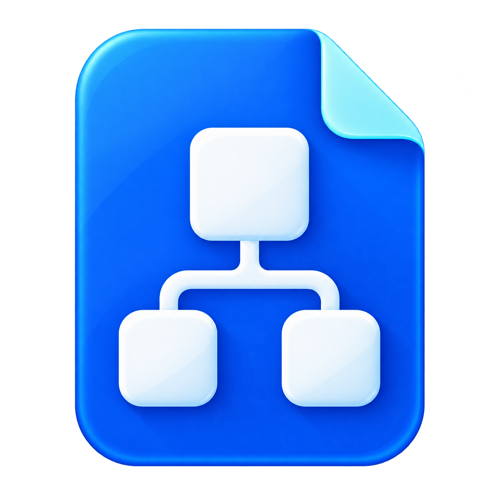
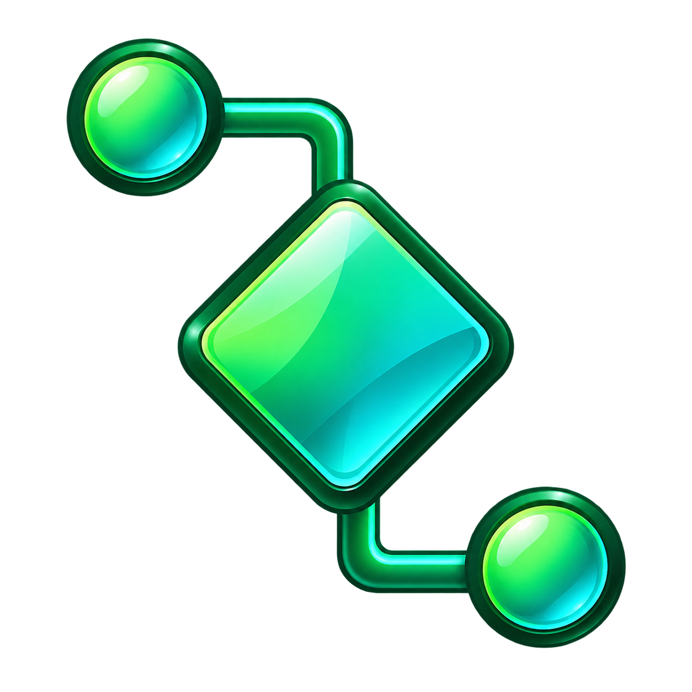

01
文書＋図

用途が伝わる
MarkdownとMermaidの機能を、そのまま一つのマークに。
小さいサイズ · 白背景 / 暗い背景
16px
32px
48px
16px
32px
48px
MMVIEWER · ICON EXPLORATION
番号で選べるデザイン候補。下段は小さいサイズと明暗背景での比較です。

MarkdownとMermaidの機能を、そのまま一つのマークに。
二つのMを重ねた、MMViewerの名前を覚えやすい形。
文書を折りたたんだM。軽さと読みやすさをイメージ。
左のフォルダ一覧と、図を読む機能を組み合わせ。

図のノードと線に絞った、緑色のシンボル。